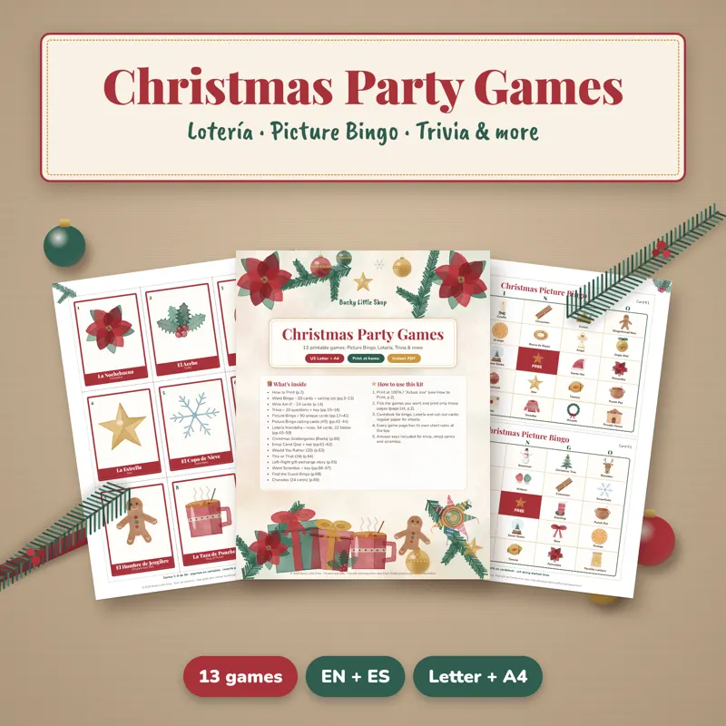
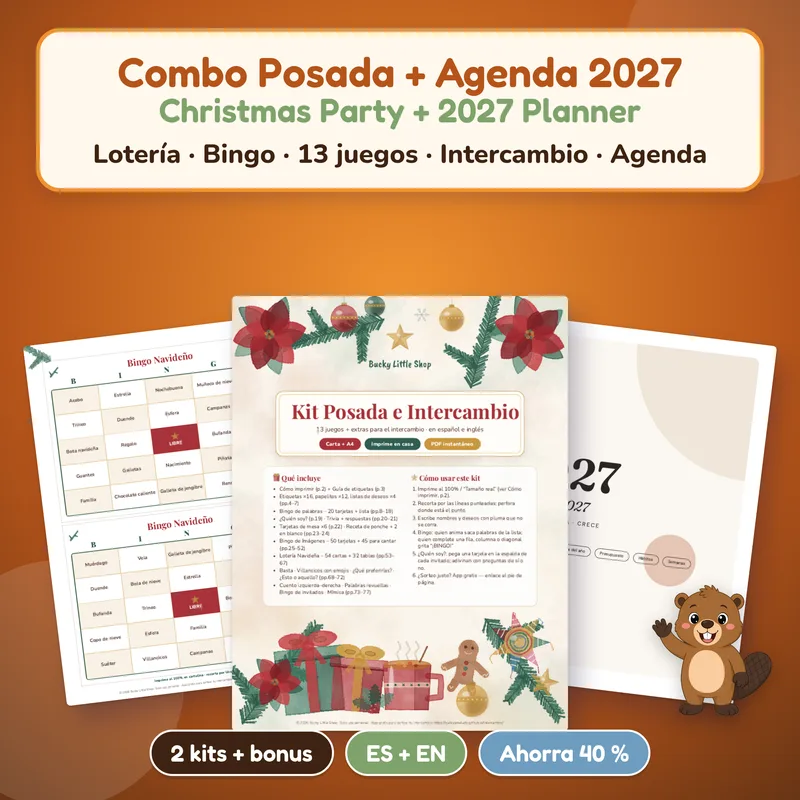
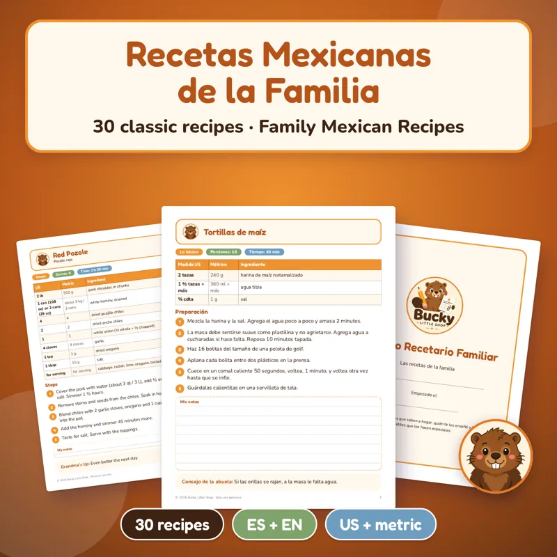
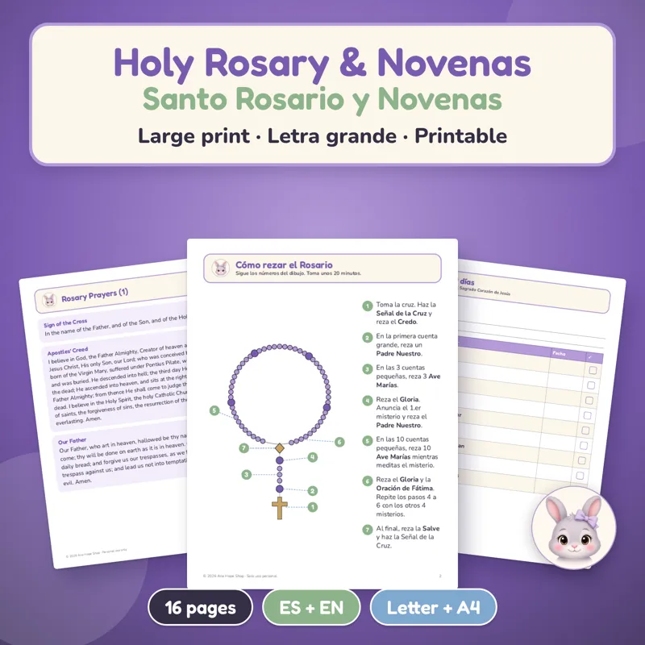

Home › Las Posadas printables
Las Posadas printables: Lotería, games and lyrics
A printable Christmas Lotería with 54 watercolor cards and 32 unique tablas plus 12 more party games for $9.99, or the Posada combo with the posada lyrics for $14.49. Instant PDFs in English and Spanish, US Letter and A4.

Christmas Party Games
13 printable Christmas games, including Lotería Navideña with 54 watercolor cards and 32 unique tablas, plus picture bingo and trivia. EN + ES.
$9.99 USDBuy and download
Posada + 2027 Planner Combo
The 13 Christmas games with Lotería, a Secret Santa kit, a 2027 planner and the posada lyrics sheet, about 40% less than buying them separately.
$14.49 USDBuy and downloadWhat Las Posadas are, and how a home posada usually goes
Las Posadas are nine nights of celebration, from December 16 to December 24, that remember Mary and Joseph looking for a place to stay in Bethlehem. Families in Mexico, and many Mexican American families and parishes in the US, take turns hosting. Many hosts also throw a single posada party on a weekend in December for friends, coworkers or the extended family.
- Pedir posada (asking for shelter): guests split into two groups. One group stands outside with candles and sings the verses of the pilgrims; the group inside answers as the innkeepers, until the door opens and everyone comes in singing together.
- Food and ponche: tamales, pozole, buñuelos and hot ponche or champurrado are the classics.
- Piñata: the traditional star piñata, with fruit and candy inside.
- Games: Lotería is the favorite, because kids, parents and grandparents can all play at the same table. Bingo, trivia and charades keep the party going after the piñata.
What each printable covers
- Christmas Lotería (Lotería Navideña): 54 original watercolor cards and 32 unique tablas, with the rules, in English and Spanish. It comes in the 13-game Christmas Party Games set for $9.99 and in the Posada combo.
- Posada lyrics: the Posada combo ($14.49) adds "Letanía para pedir posada", the traditional lyrics on an easy 2-page sheet in Spanish, color-coded for the outside and inside groups, plus a Secret Santa kit and a 2027 planner.
- Family recipes: the Mexican family recipes cookbook has 30 classic recipes in large print, including tamales, pozole, champurrado and arroz con leche, with US cups and metric amounts.
- Prayer: the Holy Rosary and novenas guide is large print and includes a novena to Our Lady of Guadalupe (December 12).
How to print them
- Download right after checkout. The games come as PDFs in English and Spanish, US Letter and A4.
- Print at 100% ("Actual size"). Use cardstock for the Lotería cards, tablas and bingo cards so they last all nine nights.
- Use beans, corn kernels or bottle caps as markers, the way Lotería is played at home.
Want the lyrics explained first? See la letra para pedir posada (in Spanish), or more printable Christmas party games and Christmas bingo.
¿Prefieres en español? Mira los juegos para posada para adultos.
More for your posada


Holy Rosary and Novenas Printable
A gentle, large-print guide to praying the Holy Rosary, ready to print at home today.
$4.99 USDBuy and download
Free Christmas Mini Kit
Charades, Would You Rather, Christmas Scattergories, card + 8 gift tags, coloring page and 2027 mini calendar. EN + ES.
FREEGet it free
All Holidays Mega Pack Printable Bundle
Every party from October to December, done!
$29 USDBuy and downloadQuestions
When are Las Posadas in 2026?
Las Posadas run for nine nights, from Wednesday, December 16 to Thursday, December 24, 2026 (Christmas Eve).
Is there a printable Christmas Lotería in English?
Yes. The Lotería Navideña in the Christmas Party Games set comes in English and in Spanish, with 54 watercolor cards and 32 unique tablas.
Are the posada lyrics included?
The 2-page "Letanía para pedir posada" lyrics sheet is a bonus in the Posada combo. It is in Spanish, color-coded for the outside and inside groups.
Can I use these at a church or office posada?
These files are for personal use: print them for your own family party at home. They are not licensed for resale or sharing.
Is there a free version?
The Christmas Mini Kit is free. It has charades, Would You Rather, Christmas Scattergories, a card and gift tags, but no Lotería.
Is anything shipped?
No. These are digital downloads you print at home or at a print shop. The files are not editable.
¿Prefieres en español? Mira posadas y Navidad, tarjetas navideñas gratis y ideas para intercambio de regalos.